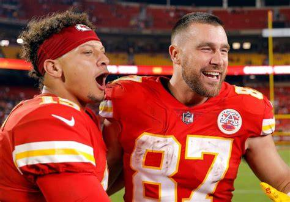

I’ve been a Chiefs fan my whole life because my mom’s family is from Missouri. This page demonstrates my ability to write HTML and CSS from scratch while exploring NFL popularity data.

Most Popular NFL Teams by County